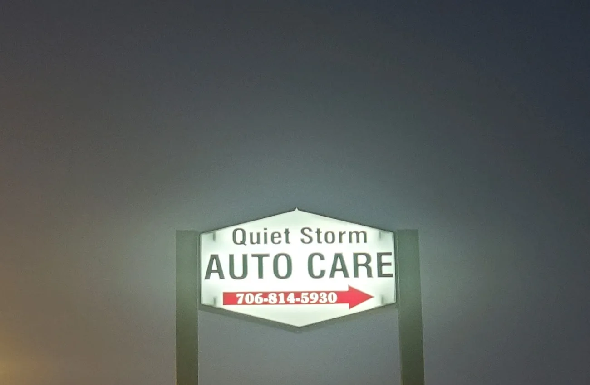

Reviews
4.9 stars. 62 voices.
Word-for-word reviews from Google. Honesty, fair pricing and friendly staff come up again and again.
4.9
from 62 Google reviews
How the 62 reviews break down
- 5★58
- 4★2
- 3★0
- 2★1
- 1★1
Breakdown as shown on Google. Topics Google highlights: fair pricing, friendly staff, honesty, integrity, alternator replacement, diagnosis.
Google reviews
In their own words.
A selection of ten five-star reviews, quoted exactly as written.
“I had a wonderful experience with this auto shop! Kenny took the time to carefully explain everything my vehicle needed,showed me the areas that needed attention, and made sure I understood the importance of each service. I truly appreciated his honesty, patience, and professionalism throughout the process. As a woman, it is especially important to feel comfortable, respected, and secure when taking your vehicle in for services. He provided that extra level of reassurance by being transparent, informative,and never making me uncomfortable asking questions. I felt confident that my vehicle was in good hands. It's refreshing to find an auto shop that values customer service, honesty, and making sure customers feel informed rather than overwhelmed. I highly recommend this shop to anyone looking for quality service, clear communication, and a mechanic along with his team you can trust. I will definitely be returning for future automotive needs! Thank you! Kenny, Kasey, and Michelle! Simply Amazing!”
“Honesty, integrity and professionalism are just a few words to describe Quiet Storm. I can not say enough great things about this shop. My vehicle was towed there after it catastrophically broke down and they diagnosed and fixed the problems with little to no visible malfunctions. They showed me what the problem was, explained it thoroughly and was spot on with the time required to fix it. The shop is impeccably clean, friendly and restores my faith in honest workmanship. Being from out of town, they communicated incredibly and charged me a very fair price. The receptionist/office manager (Michelle) and owner himself (Kenny) treated me like family and they pay attention to the small details. I'll make the two hour drive in a heartbeat just to use this shop again. 10 stars!”
“I’ve used Quiet Storm for routine maintenance and more serious issues and they have always been great to work with, quick to get the service done and extremely fair on the price. Highly recommend them!”
“Professional and Great prices. Michelle and Kenny are the best. Highly recommend.”
“Had my daughters alternator changed out on her Toyota Corolla and they did it very fast and also for a very reasonable price. This place will have our business from here on out for sure. Very friendly people also.”
“Absolutely awesome! They've worked on our car twice and it was returned in a timely manner. No extra "fixes" or "fees". They diagnosis and estimate did not change. Good mechanic.”
“If your reading the reviews wondering if you should come here COME! Mr. Kenny go above and beyond with his services which are quick, fast and reliable. There is never any discrepancies. I've had my car towed to his shop multiple times due to poor work done by other mechanics and he have my 03 back on the road in no time. Thank you for your services !”
“Honesty and integrity, that's how you rate people who become your friends. This place is set back off the street and is unlike any auto repair shop i've seen. The waiting room is clean and comfortable and his prices are reasonable!”
“So grateful to find Quiet Storm! Good service from kind people at a fair price in a timely manner. Highly recommend.”
Reply from the owner: “Thank you for your review Cat. We appreciate it”
“The receptionist and mechanics I spoke to were really friendly and informative but never pushy about getting work done. They were punctual and honest throughout the whole process. Thank you!”
Their original site’s Testimonials page had no written quotes. It showed before-and-after photos of four body repairs instead. See them on the Services page.

Book your appointment
Ready to be review number 63?
Call (706) 814-5930 to book your appointment.
Mon–Thu 9 AM–6 PM ET · by appointment